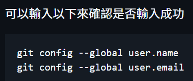

| Repository(repo) | (儲存庫)A storage space that contains all the files in your project and a history of changes |
| Staging | An intermediate step between editing files and committing changes |
| Commit | Records changes to the repository. Just like a snapshot |
| Branch | (分支)A branch is an independent line of development in a repository |
| Merge | Combine 2 different branches |
Git Install, Configure Git, Creating Git Folder, Initialize Git
Additional Information
Branch: will copy all the tracked files to new created branch(also tracked)
ls: when you type "ls", it will show all the files (including Untracked files and tracked files)
Checkout(switch current working branch): the files which are untracked(including unstaged, and staged but untracked) will remain in "ls", while the files which are tracked will be overwritten by the tracked files in the destination branch. Therefore, it is required to make all the tracked files commited before doing checkout